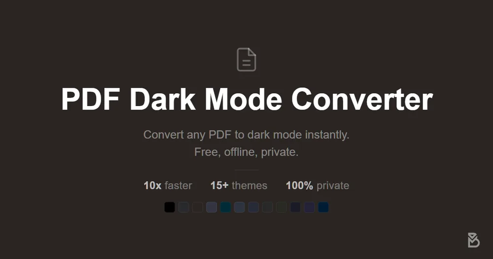
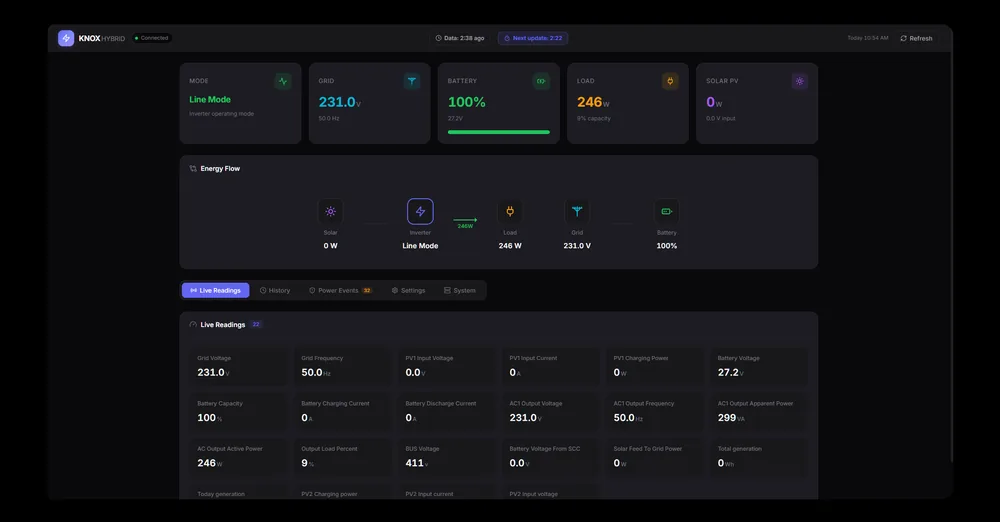
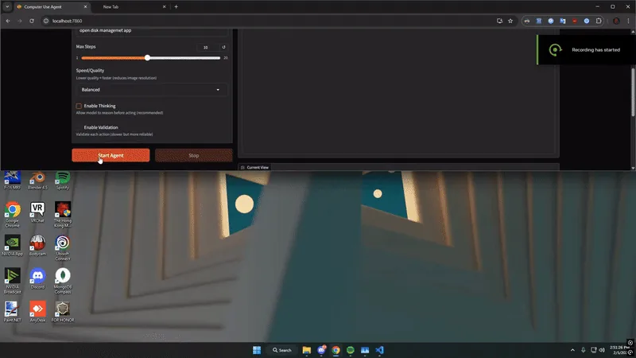
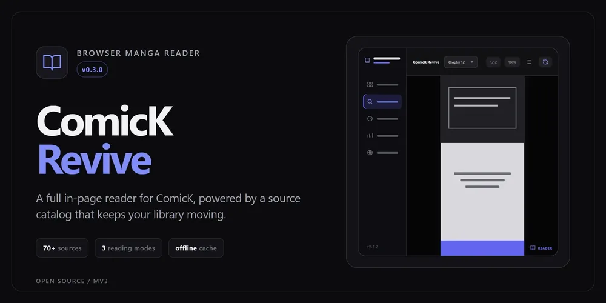
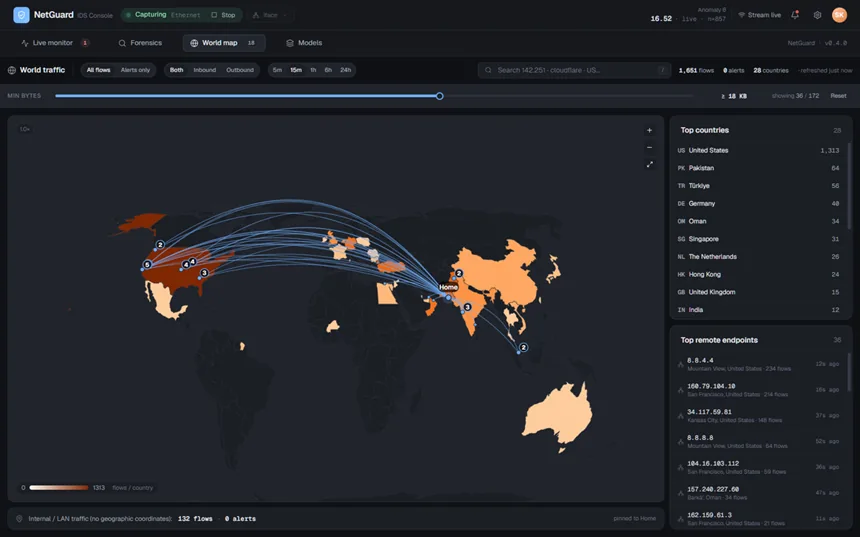
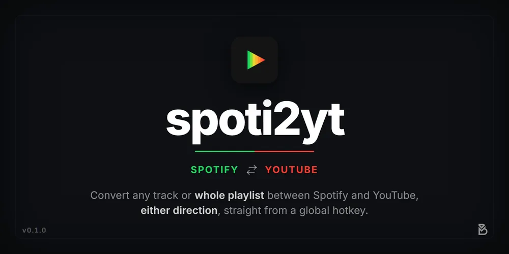

Selected work
-
PDF Dark Mode Converter
Re-themes any PDF in the browser with 16+ themes. Files never leave the device.
Browser · GPU · ★ 31
-
KnoxHybrid Monitor
Tray app that watches Knox solar-inverter data and warns when an outage starts.
Rust · Tauri · ★ 11
-
Computer-Use Agent
A local vision-language model that operates the desktop from plain-language instructions.
Python · local VLM · ★ 4
-
ComicK Revive
Chromium extension that brings back in-page reading, with offline cache and exact-position resume.
TypeScript · MV3 · ★ 1
-
NetGuard
Network intrusion detection with XGBoost, anomaly and behaviour models, mapped to MITRE ATT&CK.
Python · FastAPI · ★ 1
-
spoti2yt
Converts tracks and playlists between Spotify and YouTube from a global hotkey.
Rust · Tauri · Svelte
3D work
About
Most of what I've built started as something I needed and couldn't find, so I made it and published the source.
Lately that means Rust and local-first desktop tools. Away from code, I spend my time in Blender.
- Based in
- Islamabad, Pakistan
- Studying
- Computer science
- Works in
- Rust, Tauri, Python, TypeScript, C#
- Also
- Reverse engineering, AI tooling
- 3D
- Blender
- Available
- Internships, freelance, collaborations